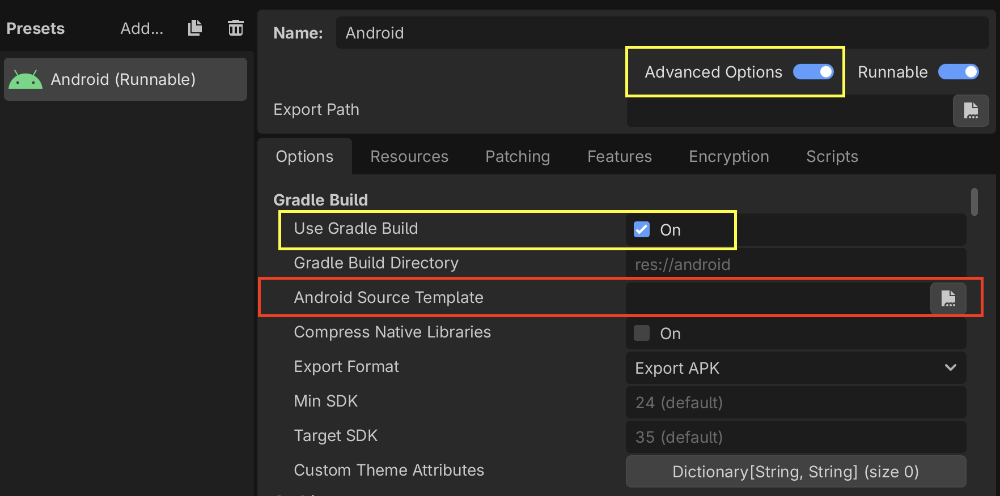
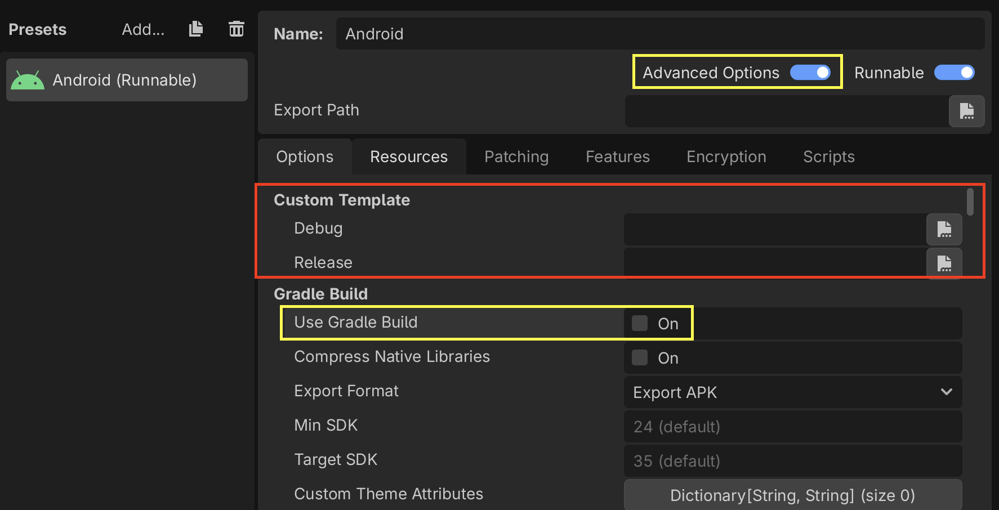
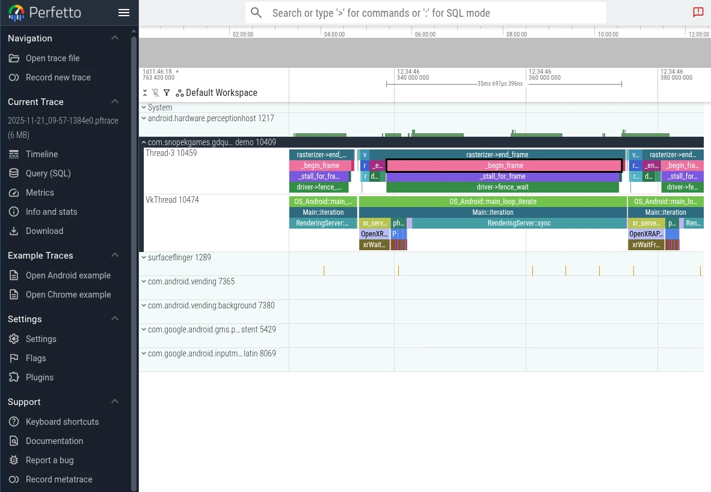

Perfetto
See also
Please see the tracing profiler instructions for more information.
Perfetto is the default tracing system for Android. In fact, its system tracing service has been built into the platform since Android 9.
Using official Perfetto templates
Starting with Godot 4.7, Perfetto export templates are provided for every stable Godot release and can be downloaded from the GitHub Releases page.
Using the Gradle build template
Navigate to the release page and download the
Godot_v<godot_version>_android_source.perfetto.ziprelease artifact wheregodot_versioncorresponds to the version of the engine being used.In the Project > Export dialog, Advanced Options and Use Gradle Build must be enabled.
Point Android Source Template to the downloaded export template.

Follow the instructions in the Configuration section to learn how to configure and create a trace.
Using non-gradle build templates
Navigate to the release page and download the following release artifacts where
godot_versioncorresponds to the version of the engine being used:Godot_v<godot_version>_android_debug.perfetto.apk(for debug builds)Godot_v<godot_version>_android_release.perfetto.apk(for release builds)
In the Project > Export dialog:
Advanced Options must be enabled
Use Gradle Build must be disabled
Point Custom Template to the downloaded export templates.

Follow the instructions in the Configuration section to learn how to configure and create a trace.
Custom Godot builds with Perfetto support
From the godot root directory, run the following python script to install
the latest version of the Perfetto SDK under thirdparty/perfetto:
python misc/scripts/install_perfetto.py
Next, build the Android debug or release templates for your architecture using
scons (per Compiling for Android), but
adding the profiler=perfetto argument.
Note
It's generally recommended to profile release templates, because that is the version your players will use, and it will perform differently than other types of builds. However, in the case of Android, it can sometimes be useful to use debug templates, because Godot can only do remote debugging of games exported from debug templates.
For example, to build the release templates for arm64:
scons platform=android target=template_release arch=arm64 generate_android_binaries=yes profiler=perfetto
Configuration
Perfetto requires a configuration file to tell it which events to track.
Create a file called godot.config with this content:
# Trace for 10 seconds.
duration_ms: 10000
buffers {
size_kb: 32768
fill_policy: RING_BUFFER
}
# Write to file once every second to prevent overflowing the buffer.
write_into_file: true
file_write_period_ms: 1000
# Track events in the "godot" category.
data_sources {
config {
name: "track_event"
track_event_config {
enabled_categories: "godot"
}
}
}
Note
Godot records two categories of track events:
godot: Used to record Godot engine events. This is used for performance analysis. Event tracing overhead should not significantly impact performance. This should be the typical tracing mode for most developers.
godot_scripting: Used to record Godot scripting events. This is a slow category as it profiles the entire game scripting logic. This is used for code understanding / debugging / finding what caused a frame hitch. Performance is much slower, but it helps to find that one problematic function call that was otherwise hidden.
Record a trace
Finally, launch your game on an Android device using the export templates you built earlier.
When you're ready to record a trace (for example, when you've hit the part of your game that is exhibiting performance issues), you can use this script from the Perfetto GitHub repository.
./record_android_trace -c /path/to/godot.config
This will record for 10 seconds (per the configuration), or until you press Ctrl + C.
Examining the trace
As soon as that script exits, it will launch the Perfetto UI in a web browser.
To see the Godot events, expand the row for your application by clicking on its Android Unique Name / Package Name / App ID (Perfetto will also include some events from system services in the trace).

Then you can use the WASD keys to navigate the graph:
Press A or D to navigate forward or backward along the timeline
Press W or S to zoom in or out
You'll probably need to zoom a bit before you're able to see the individual events from Godot.
To learn more, see the Perfetto UI documentation.